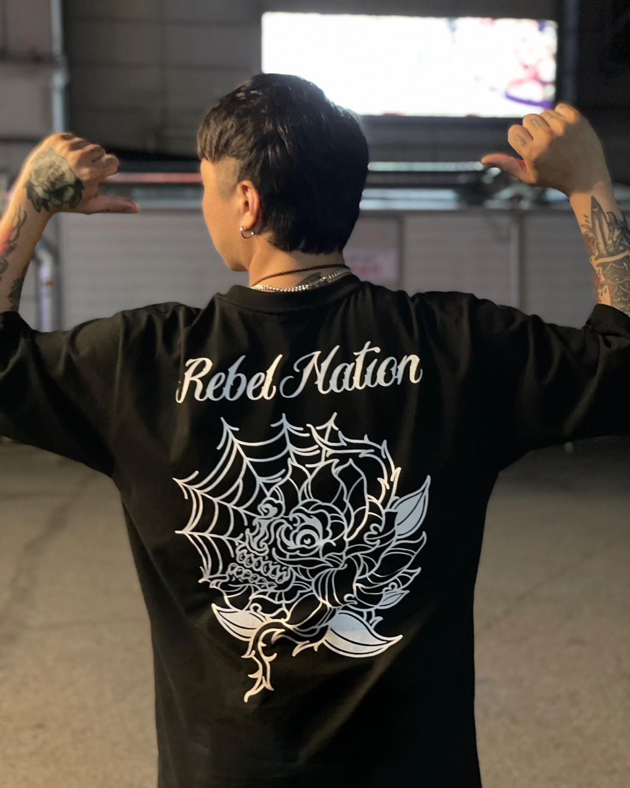

[스포츠조선닷컴 김수현기자]
훈남 레이킴이 TV조선과 함께 글로벌 아동권리 전문
NGO 굿네이버스를 통해 3000만원 상당의 공기청정기를 기부했다.
지난 16일 31번째 생일을 맞은 레이킴은 팬들과 함께
사랑의 열매에 2억원을 기부한 것에 이어 이번에는
TV조선 자회사 티조컬처앤컨텐츠와 함께 따뜻한 이웃사랑을 펼쳤다.
기부된 공기청정기는 장애인복지시설에 우선적으로 전달돼 코로나19로
실외 활동에 제약을 받는 장애인들의 건강과 쾌적한 생활을 위해 쓰여질
예정이다.
TV조선 오디션 프로그램 '슈퍼스타' 우승자로 선발된 후
전국민적인 인기를 얻고 있는 레이킴은 지난해 6월에도 코로나19
피해아동지원을 위해
1억 원을 기부하는 등 연예계 대표
기부천사로 선한 영향력을 펼쳐 왔다.